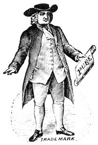
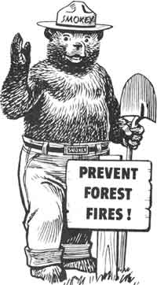
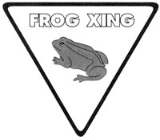
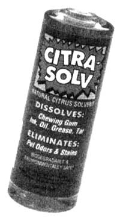

BITS & PIECES
A RECENT POLL BY THE WHEAT FOODS Council in Englewood, Colorado, found that 48% of Americans thought oatmeal was made out of... wheat.
Halfway to Boise, you start to hear a grinding noise. Not the knock of a cold engine, not the steady whir of a loose fan belt-this sounds like a chain-link fence just hooked onto your bumper. Your car still runs but...this can't be good. You're 58 miles from the next service station-if they even have someone who knows a tailpipe from a tobacco pipe-and no whiz under the hood yourself. What to do? Just pop in your "Roadside Repair and Car Care" cassette.
This clever new audiotape from Sound Advice is meant to be kept in a driver's glove compartment and will help motorists troubleshoot by talking them through various mechanical problems that can be fixed roadside. From sections on changing a flat tire to jump-starting a car, a soothing voice leads you through, step-by-step.
The 75-minute tape also contains checklists for maintenance, as well as travel tips. And it's all presented in an easy-to-under-stand fashion blissfully free of mechanical jargon. "Roadside Repair and Car Care" can be ordered from Sound Advice, Inc., Suite 109, 1712 Marsh Rd., Wilmington, DE, 19810 for $9.95 postpaid.
When municipal solid waste was decreased by 16% in just two months, the Passaic County Planning Board (PCPB) in New Jersey knew it was on to something with their "Grass... Cut it and Leave it" program.
Spearheading New Jersey's first volunteer countywide effort, the Planning Board launched the program to not only to reduce solid waste, but to save the county's 450,000 residents $2.4 million.
Instead of raking grass clippings from their lawns and throwing them into the trash, Passaic County homeowners have been leaving their clippings on the lawn or cutting their lawns with a mulching mower, which cuts the clippings into smaller particles that are blown deep into the turf and returned as nutrients to the soil. Residents are reporting that they have thicker lawns and are saving time by not having to bag and drag clippings to the curb.
Program coordinator B. Ellie Arnould was happy with the results. "In addition to alleviating the waste-disposal problems for the county, the program has raised the consciousness of homeowners about the benefits of mulching," she explained.
For information on how you can start a "Grass... Cut It and Leave It" campaign in your community this year, contact Ms. Arnould c/o P.C.P.B., 317 Pennsylvania Ave., Patterson, NJ 07503.
Seems those crass college kids are getting hip to the eco-90s and are just saying no to those passé big-buck majors. A recent Society of American Foresters (SAF) survey shows that enrollment in schools of natural resources has steadily increased over the last three years.
Shockingly, tuna fishermen are allowed to kill 20,500
dolphins per year as the result of "incidental take"
permits.
"The 1980s showed a decline in the numbers of students majoring in forestry and other natural-resources studies." said P. Gregory Smith, SAF acting director of science and education. “This is a tangible measure that interest in the environment is translating into increasing numbers of students enrolled in environmentally related majors."
Not to mention the fact that writing 1,000 words on why you admire Smoky Bear is a hell of a lot easier that explaining your view on Soviet economics.
France's newest autoroute, connecting the mountain villages of Chambrey and Albertville, opened this winter as did a two-lane underpass for the exclusive use of toads. Its seems that the freeway intersected the well-hopped path of a colony of rare toads. Quelle bonne chance pour les frogs that environmentalists saw to it that the sleeping grounds and local watering hole were linked par a two-lane toad tunnel.
Pourquoi two lanes? It seems that this toad road had to be two lanes because the frogs refuse to yield to each other in the same lane. Sort of like the Frogs on the autoroute, non?
Sick of giving flowers and candy for Valentine's Day? The American Forestry Service has a nifty idea which would surprise even the most jaded gift-getter. For a $30 donation, the service (the nation's oldest nonprofit citizen's conservation organization) gives tree enthusiasts the opportunity to plant a famous and historic tree grown by the seeds of a magnificent red maple shading George Washington's Mount Vernon home. Those interested in participating can order their tree by calling 800/677-0727. The majority of the proceeds will go directly to the association as well as to Global ReLeaf, another organization committed to halting deforestation around the world.
The recycling of cans and bottles is on a slow but steady increase, says the National Soft Drink Association.
The number of aluminum cans being recycled jumped 3%, from 61% in 1989 to 64% in 1990. The biggest gainer, aluminum-steel cans, made a 50% increase, with the 1989 figure of 22% leaping to 33% in 1990. Plastic bottles crawled ahead 1%, with 29% of bottles being recycled in 1990 as opposed to 1989's rate of 28%. And 5% more glass bottles were recycled in 1990 (20%) than 1989 (15%).
After cleaning the paint off our hands with harsh turpentine for the hundredth time, we knew their had to be a better way. Well, after much looking and testing, we've found it-Citra-Solv. Packaged in recyclable material, Citra-Solv is 100% biodegradable, non-caustic, and contains no bleaching agents. Based on highly concentrated natural-citrus extracts, Citra-Solv can be used on almost any fiber or surface, except plastic.
In place of carcinogenic solvents such as lacquer and paint thinner, we tried Citra-Solv on grease, oil, tar, ink, gum, fresh paint, blood, and stains of all sorts. It simply dissolves the icky stuff (even cleans up pet stains an grimy ovens!).
While not cheap (a 16-ounce bottle costs $8 and a 32-ounce bottle $11), a little goes a long way and one bottle replaces about five different products. It can be ordered from Real Goods, 966 Mazzoni St., Ukiah, CA 95482, or call 800/762-7325.
Despite the fact that all tuna sold in the United States is now deemed "dolphin safe," tens of thousands of dolphins still continue to die at the hands of tuna fishermen. In April 1990, the three largest sellers of canned tuna-H.J. Heinz (StarKist), Van Camp Seafood (Chicken of the Sea) and the Pillsbury Company (Bumble Bee)- agreed to end all purchasing, processing, and selling of tuna caught in purse-seine nets, which kill nearly 100,000 dolphins each year. However, the presence of dolphin-safe tuna in our grocery stores isn't stopping the dolphin massacre in other countries. Shockingly, even in the United States, tuna fishermen are allowed to kill 20,500 dolphins per year as the result of "incidental take" permits issued by the National Marine Fisheries Service.
The Bush administration is currently negotiating with Mexico and Canada to establish the North American Free Trade Agreement (NAFTA), which would deregulate trade between the three countries. Because American tuna companies do not sell dolphin-caught tuna, in 1990 a U.S. federal court held that the United States could prevent Mexican tuna caught by those methods from entering American grocery stores. Mexico then challenged the policy as a violation of the General Agreement on Trade and Tariffs (GAGG) free-trade prescriptions. This past September, a three-judge GATT panel-consisting of jurists from Switzerland, Uruguay and Hungary-found the ban to be an unfair trade barrier.
Do you have any interesting, informative, or timely news you 'd like to share with other MOTHER readers? If so, please send newspaper clippings, photos, or true tales to: "Bits & Pieces." Mother Earth News , P.O. Box 129, Arden. NC 28794.
|
 |
 |
 |
|
 |
|
|